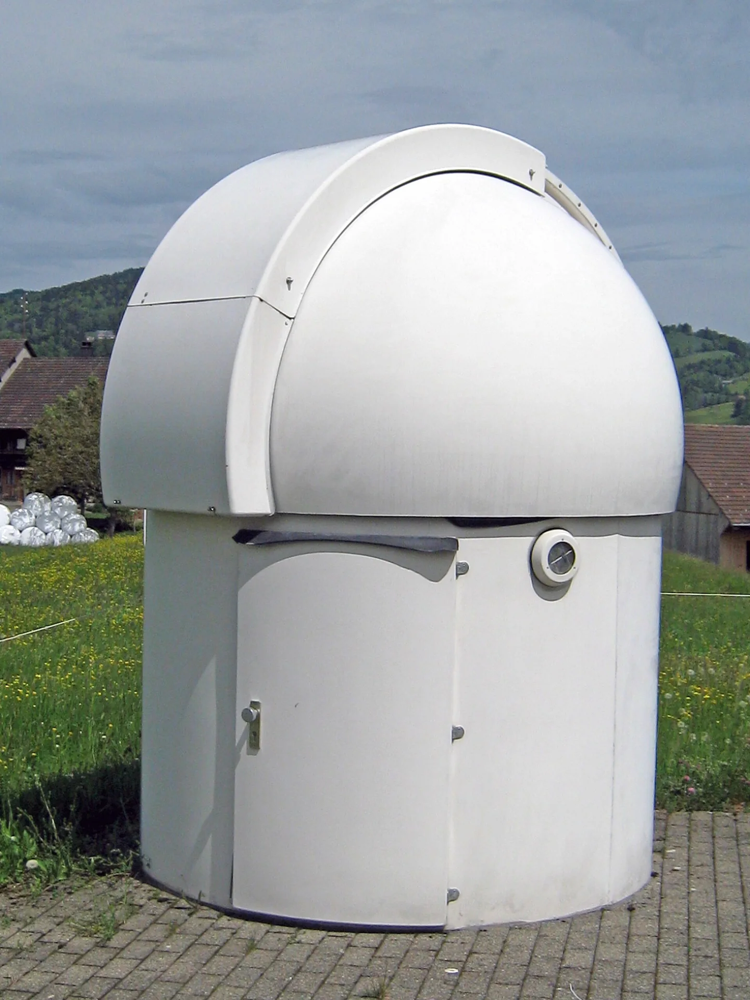
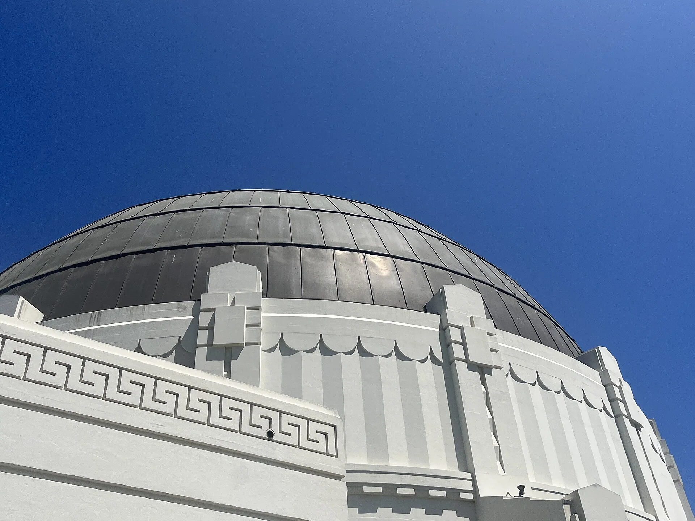
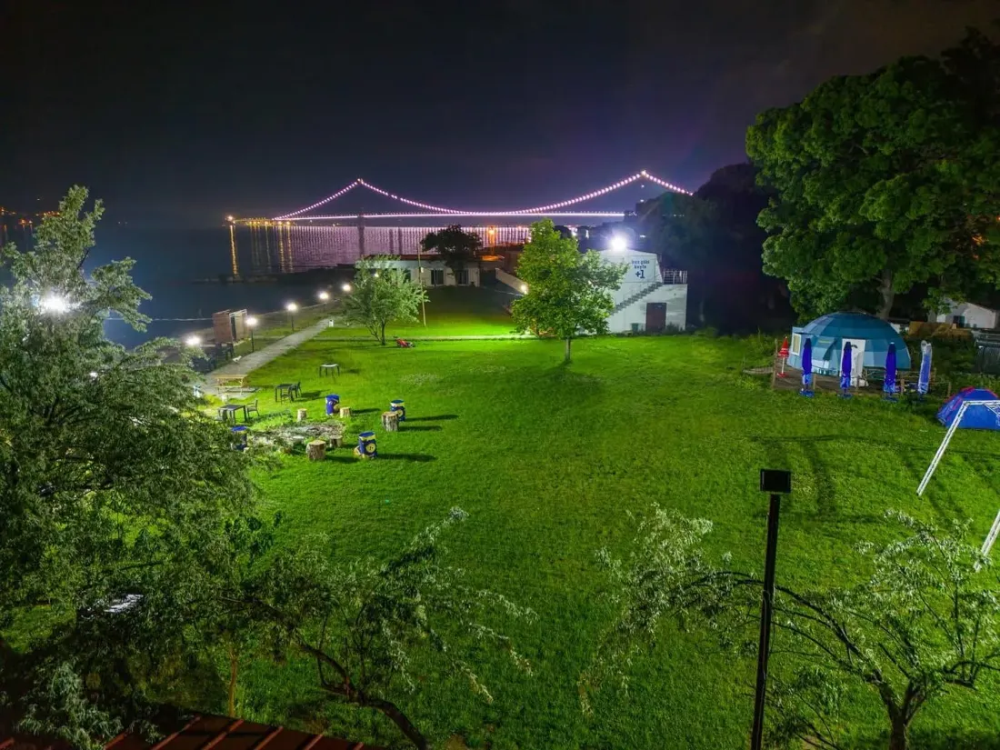
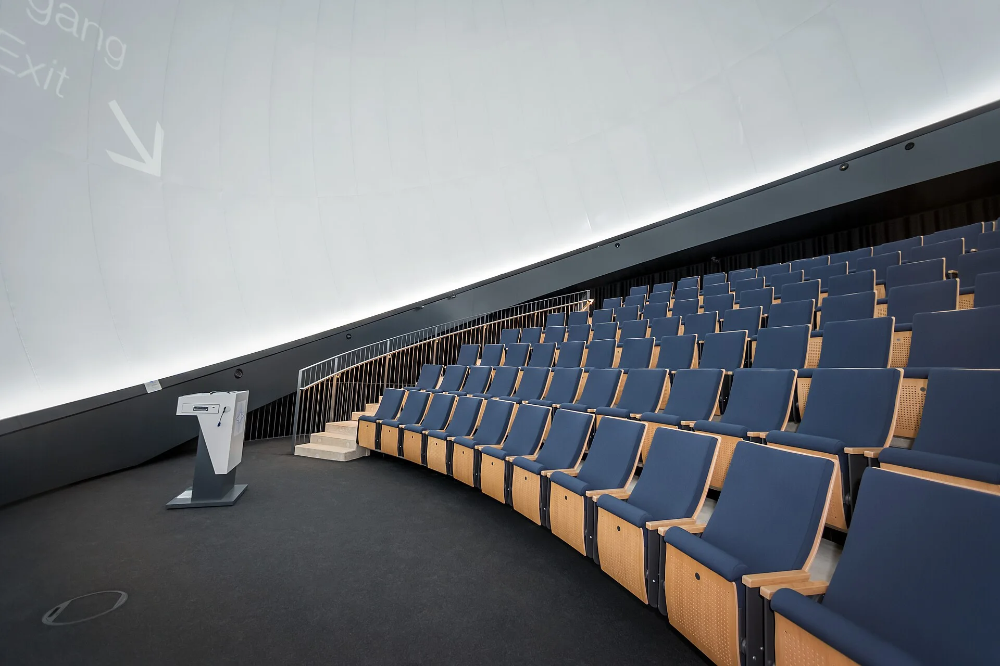

İş kollarımız
Ne yapıyoruz

01Gözlemevi
Kubbe, teleskop ve montaj; anahtar teslim gözlemevi kurulumu.
İNCELE →
02Sabit Planetaryum
Kurum ve belediyelere kalıcı planetaryum; düzenli seans programı.
İNCELE → 03
03Çadır Planetaryum
Okul ve etkinliklere taşınabilir kubbe; kurulum, gösteri, toplama.
İNCELE →
04Bilim Kampı · KampMars
Gökyüzü gözlemi, deneyler ve atölyelerle dolu bilim kampları.
İNCELE →
05Bilim Merkezleri
Kurum ve belediyelere bilim merkezi; planetaryum, gözlem ve uygulamalı bilim alanları.
İNCELE →